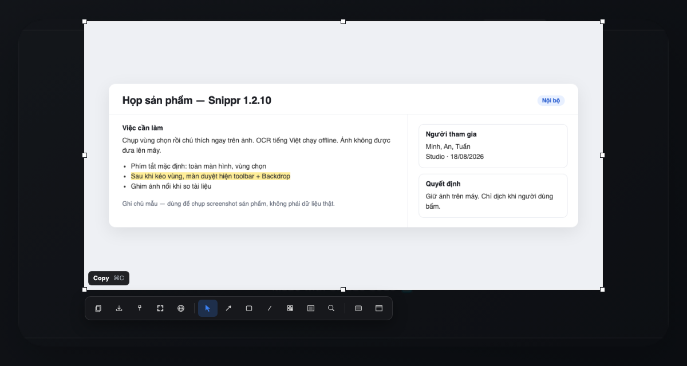
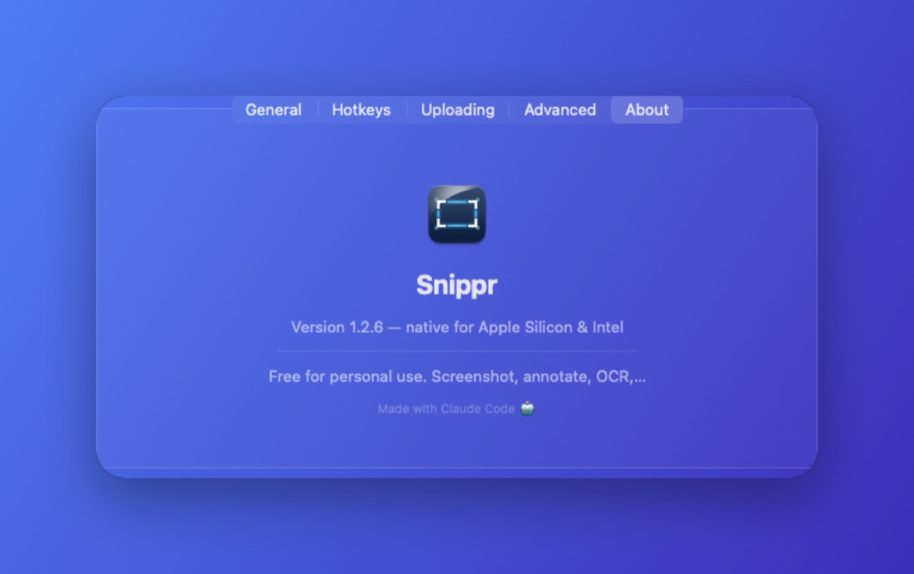
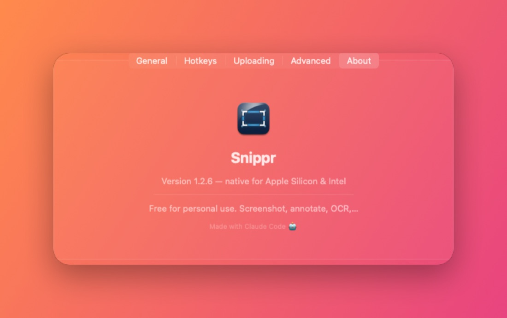
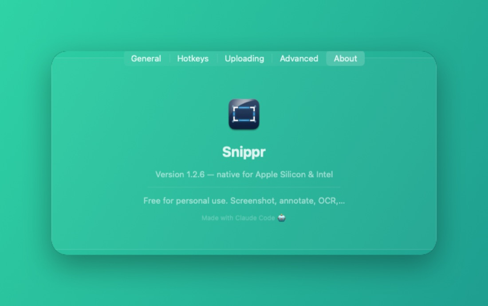
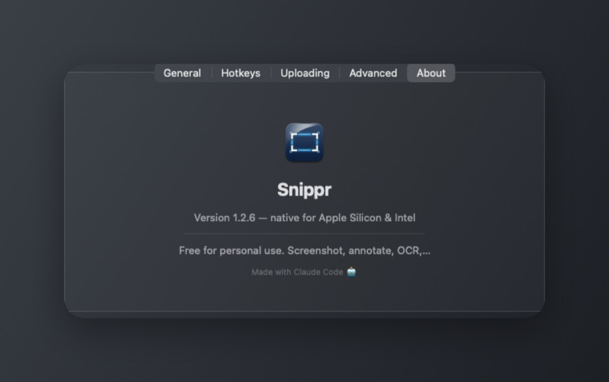

01
Màn duyệt
Kéo xong, toolbar bám cạnh vùng. Tám handle để crop. Kéo ngang qua toolbar không đứt thao tác.
macOS · Windows · mã nguồn mở
Kéo vùng — thanh công cụ hiện ngay trên ảnh. Backdrop, Spotlight, crop tại chỗ, OCR tiếng Việt offline. Không tài khoản. Ảnh không lên mây.

Mới · macOS · Windows
Không cần mở cửa sổ khác nếu chỉ copy, che, hoặc gắn nền. Editor vẫn đó khi cần zoom và chú thích kỹ.
Kéo xong, toolbar bám cạnh vùng. Tám handle để crop. Kéo ngang qua toolbar không đứt thao tác.
Năm nền: Ocean, Sunset, Mint, Graphite, Contact. Plate có bóng và grain — trong Editor và trên màn duyệt.
Rê chuột lên nút: tên lệnh + phím tắt. Hiện đúng cả bốn góc màn, không tràn mép.
Làm tối xung quanh vùng cần nhìn, hoặc phóng chi tiết. Pixelate 1.2.11 che bằng trung bình ô, không lộ màu gốc.
Snippr nằm trên menu bar hoặc khay hệ thống. Phím tắt, chụp, đánh dấu, copy. Không wizard, không đăng nhập.
Toàn màn hình, kéo vùng, cửa sổ, hẹn 3 giây, lặp lại vùng cũ. Sau khi chọn, copy / lưu / ghim / OCR / dịch / mở Editor ngay trên ảnh.
Bạn cuộn, Snippr ghép. Banner chạy không nhân đôi đầu trang. Xong thì mở Editor để zoom và cắt.
Mũi tên, hình, bút, chữ, số thứ tự, làm mờ, cắt. Lăn chuột đổi nét, ⌘/Ctrl + lăn để zoom. App nhớ màu và độ dày vừa dùng.
OCR tiếng Việt và tiếng Anh chạy offline trên máy. Dịch chỉ gửi văn bản khi bạn bấm — không tự gửi ảnh.
Ghim ảnh nổi trên mọi cửa sổ. Phím tắt đổi được trong Cài đặt, trên cả hai hệ.
Không tài khoản, không phân tích, không đồng bộ đám mây. Chỉ phần Dịch gọi Google Translate khi bạn chủ động dùng.
Màn duyệt
Thanh công cụ bám cạnh vùng vừa chọn. Đổi crop bằng tám handle. Backdrop, Magnifier, Spotlight ngay tại chỗ — không bắt mở Editor nếu chỉ cần copy hoặc che.
Backdrop
Năm preset có bóng plate và grain. Dùng khi chụp cửa sổ hoặc gắn nền cho vùng vừa cắt. Cài đặt vẫn chọn wallpaper, trong suốt, màu đặc, hoặc cắt bóng.




Editor
Hai hàng công cụ, nút Backdrop cạnh màu. Zoom 50% / 200% khung vẫn khớp. Cuộn được tới mép phải và mép dưới của khung.

OCR & dịch
Quét vùng có chữ, copy ngay. Cần dịch thì chọn ngôn ngữ — Việt, Anh, Nhật, Hàn, Trung… Phần còn lại của ảnh không rời máy.

Màn duyệt, Editor, Backdrop, OCR — đúng những gì vừa lên.

Miễn phí. Chọn đúng máy. Không cần tạo tài khoản.
Không đọc được version.json — không đưa link tải cũ. Dùng GitHub Releases hoặc thử tải lại trang.
Apple Silicon
Cho máy M1 trở lên. Kéo vào Applications là xong. Có màn duyệt, Backdrop, Spotlight.
Tải DMGx86_64
Cho Mac dùng chip Intel. Cùng tính năng với bản Apple Silicon.
Tải DMG64-bit
Màn duyệt sau khi kéo vùng, HUD phím tắt, Backdrop / Magnifier / Spotlight, pixelate che thật. Installer hoặc ZIP portable.
Tải SetupBản này chưa ký Authenticode. Nếu SmartScreen hỏi, đối chiếu SHA-256 trên GitHub rồi chọn More info → Run anyway. ZIP portable
Trên Mac, một lệnh là đủ. Trên Windows, chạy installer.
Mac — cài nhanh. Mở Terminal, dán lệnh, Enter. Script tự chọn bản Apple Silicon hoặc Intel, kiểm SHA-256 và chữ ký, rồi đặt app vào Applications.
curl -fsSL https://snippr.pages.dev/install.sh | sh
Bạn có thể đọc toàn bộ script tại install.sh.
SnipprSetup-win-x64.exe.Đổi được trong Cài đặt.
| Việc | Mac | Windows |
|---|---|---|
| Toàn màn hình | ⇧⌘1 | Ctrl+Shift+1 |
| Vùng chọn | ⇧⌘2 | Ctrl+Shift+2 |
| Cửa sổ đang mở | menu bar → More | Ctrl+Shift+4 |
| Quét chữ / QR | ⌃⌥⌘O hoặc nút trên ảnh | Nút OCR trên editor / màn duyệt |
Trong editor: lăn đổi độ dày · ⌘/Ctrl + lăn zoom · ⌘/Ctrl + C copy và đóng · ⌘/Ctrl + S lưu · ⌘/Ctrl + Z hoàn tác · phím A R T B đổi công cụ.
Được. Tải nút Mac Intel. Bản Apple Silicon dành cho M1 trở lên.
Bản Mac dùng chữ ký Snippr ổn định để giữ quyền Ghi màn hình khi cập nhật, nhưng chưa notarize với Apple. Bản Windows chưa ký Authenticode. Mã nguồn và SHA-256 công khai trên GitHub để bạn tự kiểm.
Mac: icon trên thanh menu → Cài đặt → Hotkeys, bấm ô rồi gõ tổ hợp mới. Windows: chuột phải icon khay → Settings, bấm ô hotkey rồi gõ tổ hợp (Esc để tắt phím đó).
Mặc định trên Desktop, đổi được trong Cài đặt. Auto chọn PNG cho giao diện, JPEG cho ảnh nhiều màu. Sau khi chụp cuộn trang, app mở Editor để zoom và cắt.
Không. Không tài khoản, không analytics. Ảnh không rời máy. Chỉ khi bạn bấm Dịch thì đoạn chữ đã quét mới được gửi đi để dịch.